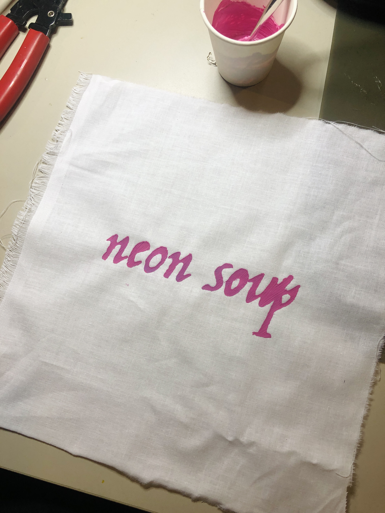

dynamic actuator
May 20, 2022
Description
Using thermochromic pigments, I was able to create a dynamically changing fabric actuator.
Thermochromic pigment becomes colorless when heat is applied. By mixing this pigment with paint and applying this paint on textiles, we're able to produce a dynamic textile that changes color when heat is applied. One way to apply heat is to place the dynamic textile over another textile or surface that can change temperature. Another way is to sew conductive thread through the areas we want to apply heat to and run current through the thread, which heats it up. This is simple to achieve, and my favorite quality of the thermochromic pigment is that it behaves similarly to memory foam. Memory foam bounces back into its original shape once pressure is removed, similarly, the thermochromic pigment appears colorful again after the heat dissipates.
If I were to implement the thermochromic pigment in an artwork, I would use it on a mounted canvas painting or wearable that discusses fleeting memories and the impact people have on us. How do our interactions with others impact us in that moment? How have the people I met shaped the person I was in the past, who I am now, and who I will be in the future? What do I remember from those interactions? What memories stay? What do we do to hold onto the people and the memories from the past?
Applying the Thermochromic Pigment Mixed w/ White Acrylic Paint

Textile with Conductive Thread
References
I learned how to craft this dynamic textile while in class, but Kobakant has a reference for using thermochromic dyes.
-
Kobakant In All Different Colors
Specifications
conductive thread, fabric, thermochromic pigment (pink), white acrylic paint